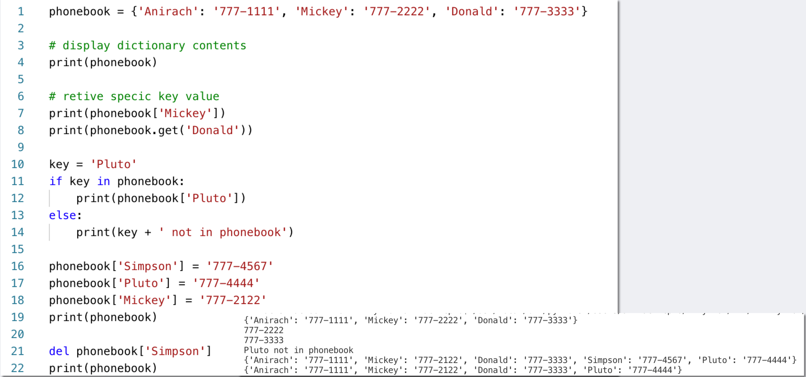
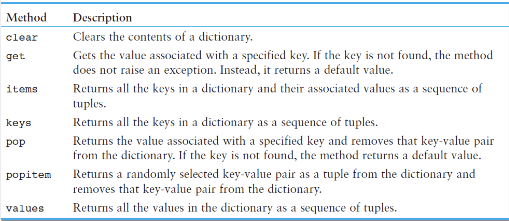
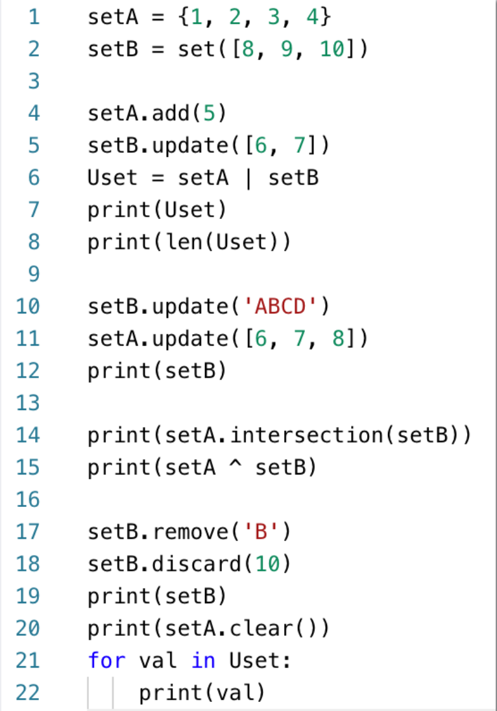
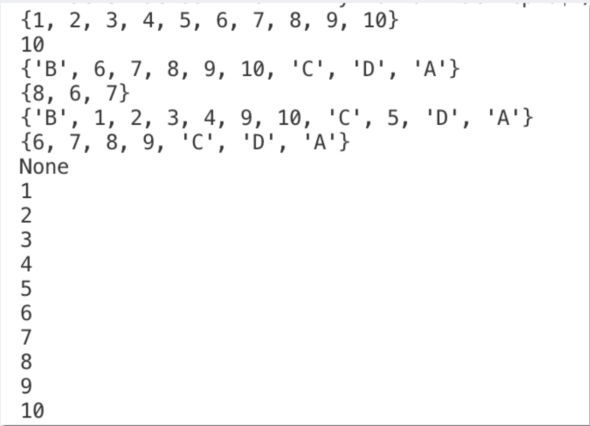
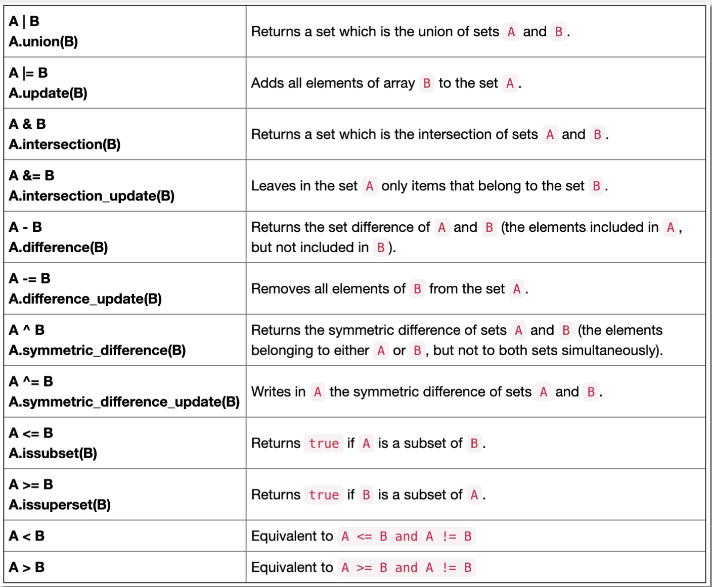
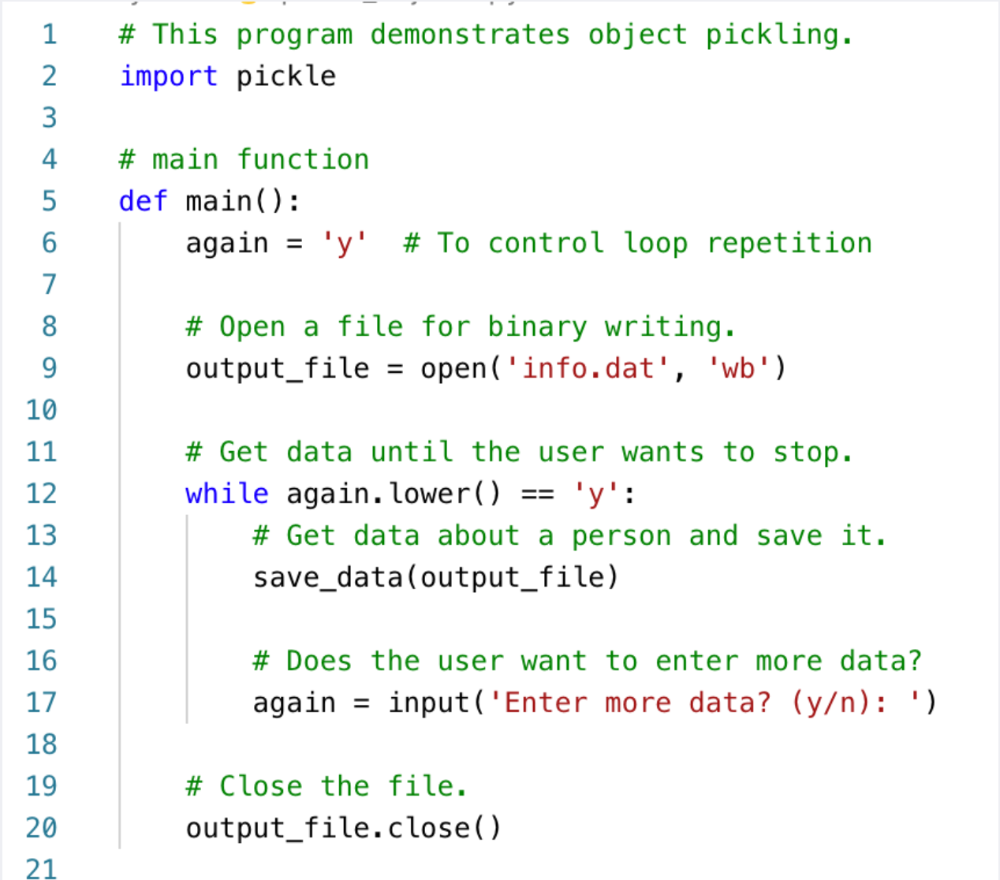
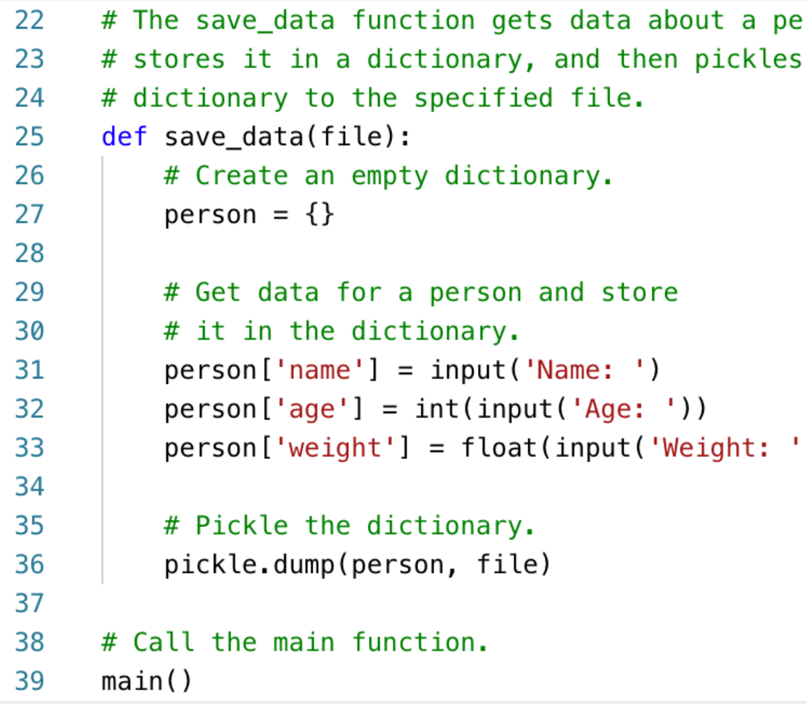
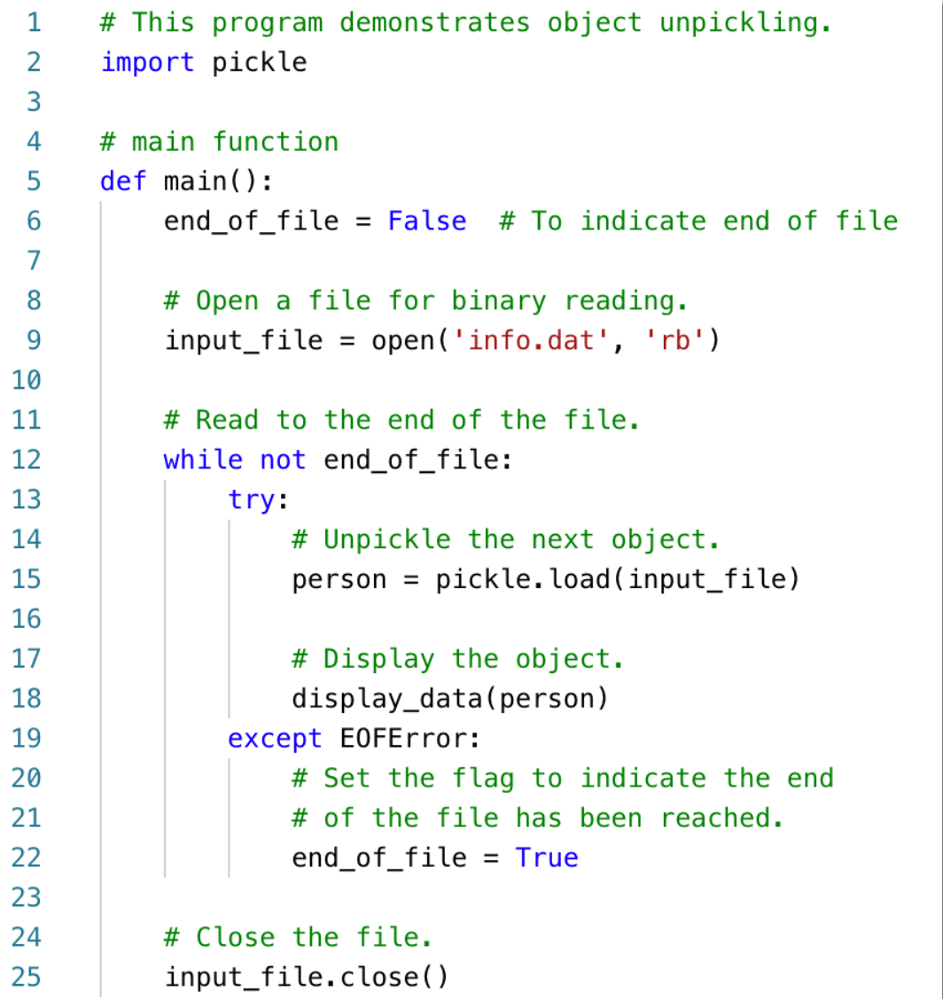
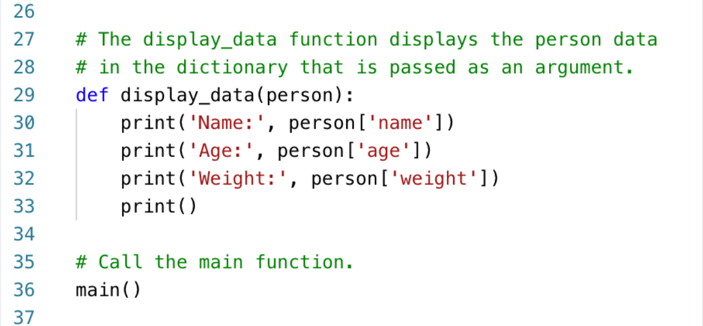

08
PYGAME-ZERO
DICTIONARIES
Introduction
DICTIONARIES
• Dictionary : object that stores a collection of data
- Each element consists of a key and a value
- Often referred to as mapping of key to value
- Key must be an immutable object
- To retrieve a specific value, use the key associated with it
- Format for creating a dictionary
dictionary = {key1:val1, key2:val2}
ADD AND DELETE DICTIONARY
• Dictionaries are mutable objects
• Toaddanewkey-valuepair: dictionary[key] = value
- If key exists in the dictionary, the value associated with it will be changed
• Todeleteakey-valuepair: del dictionary[key]
- If key is not in the dictionary, KeyError exception is raised
INTRODICT.PY
INTRODICT.PY
DICTIONARY NUMBER OF ELEMENTS AND MIXING DATA TYPES
• len function: used to obtain number of elements in a dictionary
• Keys must be immutable objects, but associated values can be any type of object
- One dictionary can include keys of several different immutable types
• Values stored in a single dictionary can be of different types
CREATING AN EMPTY DICTIONARY AND USING FOR LOOP
• To create an empty dictionary:
• Use {}
- Use built-in function dict()
- Elements can be added to the dictionary as program executes
• Use a for loop to iterate over a dictionary
- General format: for key in dictionary:
for key in dictionary:
SOME DICTIONARY METHODS

DICTIONARY EXERCISE
SET
Set Methods and Useful Built-in Functions
• Set: object that stores a collection of data in same way as mathematical set
- All items must be unique
- Set is unordered
- Elements can be of different data types
• len function: returns the number of elements in the set
• Sets are mutable objects
• add method:addsanelementtoaset
• update method: adds a group of elements to a set
- Argument must be a sequence containing iterable elements, and each of the elements is added to the set
• remove and discard methods: remove the specified item from the set
- The item that should be removed is passed to both methods as an argument
- Behave differently when the specified item is not found in the set
- remove method raises a KeyError exception
- discard method does not raise an exception
• clear method: clears all the elements of the set
FINDING THE UNION OF SETS
Set Methods and Useful Built-in Functions
• Union of two sets: a set that contains all the elements of both sets
• To find the union of two sets:
- Use the union method
- Format: set1.union(set2)
- Use the | operator
- Format: set1 | set2
- Both techniques return a new set which contains the union of both sets
FINDING THE INTERSECTION OF SETS
Set Methods and Useful Built-in Functions
• Intersection of two sets: a set that contains only the elements found in both sets
• To find the intersection of two sets:
- Use the intersection method
- Format: set1.intersection(set2)
- Use the &operator
- Format: set1 | set2
- Both techniques return a new set which contains the intersection of both sets
FINDING THE SYMMETRIC DIFFERENCE OF SETS
• Symmetric difference of two sets: a set that contains the elements that are not shared by the two sets
• To find the symmetric difference of two sets:
- Use the symmetric_difference method
- Format: set1.symmetric_difference(set2)
- Use the ^operator
- Format: set1 ^ set2
FINDING SUBSETS AND SUPERSETS
• Set A is subset of set B if all the elements in set A are included in set B
• To determine whether set A is subset of set B
- Use the issubset method
- Format: setA.issubset(setB)
- Use the <= operator
- Format: setA <= setB
FINDING SUBSETS AND SUPERSETS
•
Set A is superset of set B if it contains all the elements of set B
• To determine whether set A is superset of set B
- Use the issuperset method
- Format: setA.issuperset(setB)
- Use the >= operator
- Format: setA >= setB
SETINTRO.PY
SALE_REPORT4.PY(TRY-EXCEPT-ELSE)
 SET OPERATION

SERIALIZING OBJECTS
Serializing Objects
SERIALISING OBJECTS
• Serialize an object: convert the object to a stream of bytes that can easily be stored in a file
• Pickling: serializing an object
• To pickle an object:
- Import the pickle module
- Open a file for binary writing
- Call the pickle.dump function
- Format: pickle.dump(object, file)
- Close the file
• You can pickle multiple objects to one file prior to closing the file
• Unpickling: retrieving pickled object
• To unpickle an object:
- Import the pickle module
- Open a file for binary writing
- Call the pickle.load function
- Format: pickle.load(file)
- Close the file
• You can unpickle multiple objects from the file
PICKLE_OBJECTS.PY
PICKLE_OBJECTS.PY


UNPICKLE_OBJECTS.PY
UNPICKLE_OBJECTS.PY


SUMMARY
SUMMARY
Dictionaries, including:
• Creating dictionaries
• Inserting, retrieving, adding, and deleting key-value pairs
• for loops and in and not in operators
• Dictionary methods
Sets:
• Creating sets
• Adding elements to and removing elements from sets
• Finding set union, intersection, difference and symmetric difference Finding subsets and supersets
Serializing objects
• Pickling and unpickling objects